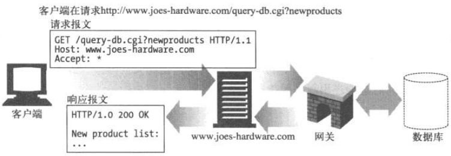
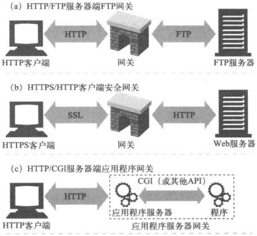
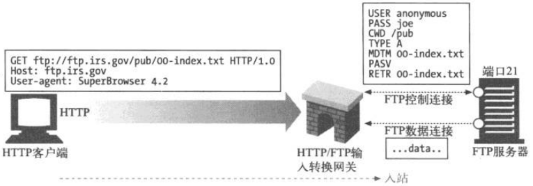
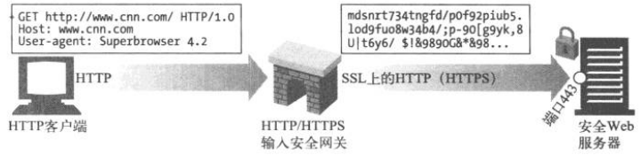
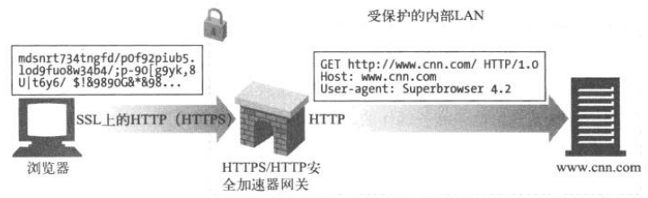
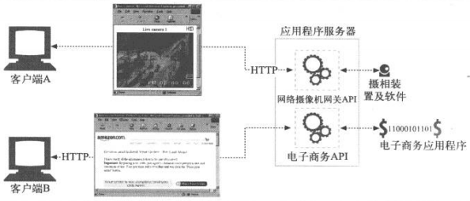
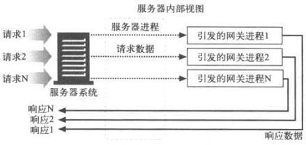

目录
网关
翻译器
资源和应用程序之间的粘合剂
应用程序向网关发出一条请求，网关提供一条响应
网关可以向数据库发送查询语句，或动态生成内容


- a)
- 网关收到对 FTP URL 的 HTTP 请求；
- 网关打开 FTP 连接并向 FTP 服务器发送适当命令；
- 将文档与正确的 HTTP 首部通过 HTTP 返回。
- b)
- 网关通过 SSL 收到一条加密的 Web 请求；
- 网关对请求进行解密（网关上要安装适当的服务器证书），然后发给目标服务器一条普通的 HTTP 请求。
- c)
- 网关通过应用程序服务器网关 API，将 HTTP 客户端连接到服务器端的应用程序上。
- 上网购物、看天气预报，或查询股票报价时，访问的就是应用程序服务器网关。
客户端与服务器端网关
- Web 网关在一侧使用 HTTP 协议，在另一侧使用另一种协议；
- 在不同 HTTP 版本间进行转换的 Web 代理像网关一样，它们执行复杂的逻辑，在各个端点间进行沟通。但它们在两侧都使用 HTTP， 所以技术上讲它们是代理。
HTTP/*：服务器端 Web 网关
请求流入服务器时，服务端 Web 网关会将客户端 HTTP 请求转换为其他协议：

网关收到一条对 FTP 资源的 HTTP请求：ftp://ftp.irs.gov/pub/00-index.txt
网关会打开一条到服务器 FTP 端口的 FTP 连接，通过 FTP 协议获取对象，网关会做以下事：
- 发送 USER 和 PASS 命令登录服务器；
- 发布 CWD 命令，转移到服务器上的目标目录；
- 将下载类型设置为 ASCII；
- 用 MDTM 获取文档的最后修改时间；
- 用 PASV 告诉服务器有数据获取请求到达；
- 用 RETR 请求进行对象获取；
- 打开到 FTP 服务器的数据连接，服务器端口由控制信道返回；一旦数据信道打开，就将对象内容送回网关。
完成获取后，会将对象放在一条 HTTP 响应中返回客户端。
HTTP/HTTPS：服务器端安全网关
可以通过网关对所有输入的 Web 请求加密，客户端用普通的 HTTP 浏览 Web 内容，但网关会自动加密用户的对话。

HTTPS/HTTP：客户端安全加速器网关
客户端安全加速器网关中通常有专用的解密硬件，可以减轻服务器负荷，并且更快的解密安全流量。网关在网关和服务器之间发送的是未加密的流量，所以要确保网关和服务器之间的网络是安全的。

资源网关
最常见的网关——应用程序服务器，将目标服务器与网关结合在一个服务器中实现。
应用程序服务器是服务器端网关，与客户端通过 HTTP 进行通信，并与服务器端的应用程序相连。

客户端 A、B 通过 HTTP 连接到应用程序服务器，但应用程序服务器没有返回文件，而是把请求通过一个网关应用编程接口（Application Programming Interface, API）发送给运行在服务器上的应用程序。
- 应用程序服务器收到客户端 A 的请求，根据 URI 将其通过 API 发给一个数码相机应用程序，将得到的图片绑定到一条 HTTP 响应报文中，返回给客户端；
- 应用程序服务器收到客户端 B 的请求，根据 URI 将其通过 API 发给一个电子商务应用程序，结果会被回送给客户端。
第一个流行的应用程序网关 API 是通用网关接口（Common Gateway Interface, CGI）。
CGI 是一个标准接口集，Web 服务器可以用它来装载程序以响应特定 URL 的 HTTP 请求，并收集程序的输出数据，将其通过 HTTP 响应回送。
